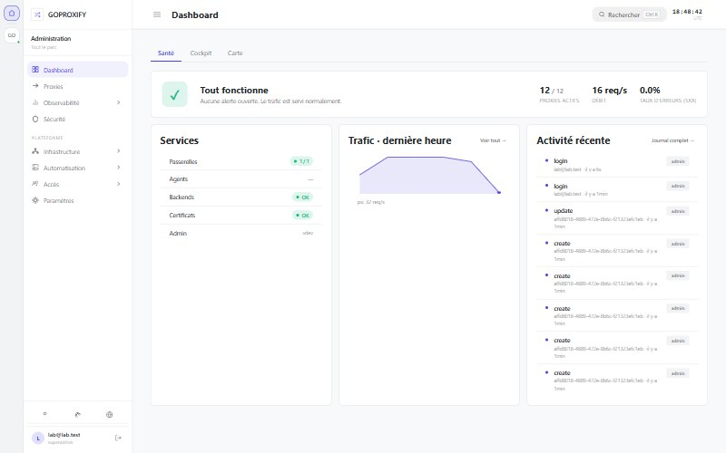
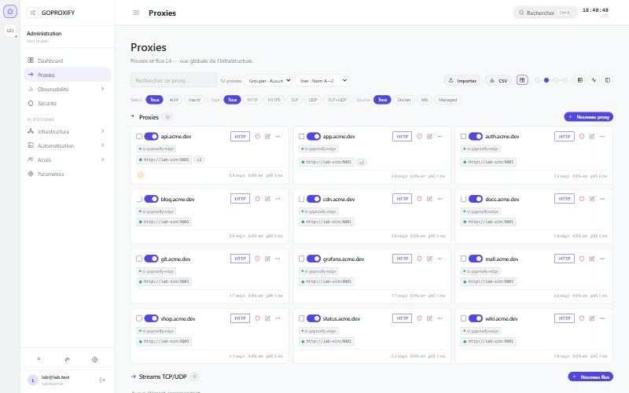
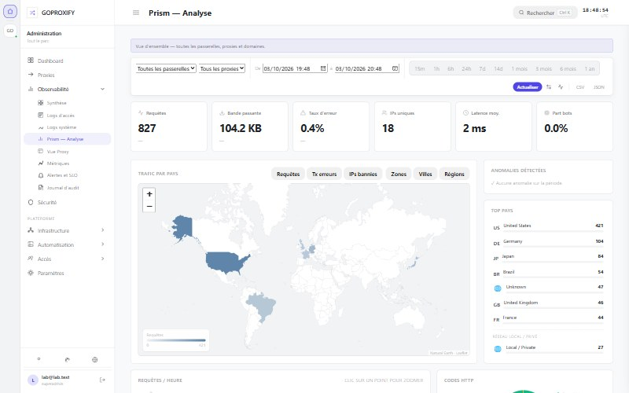
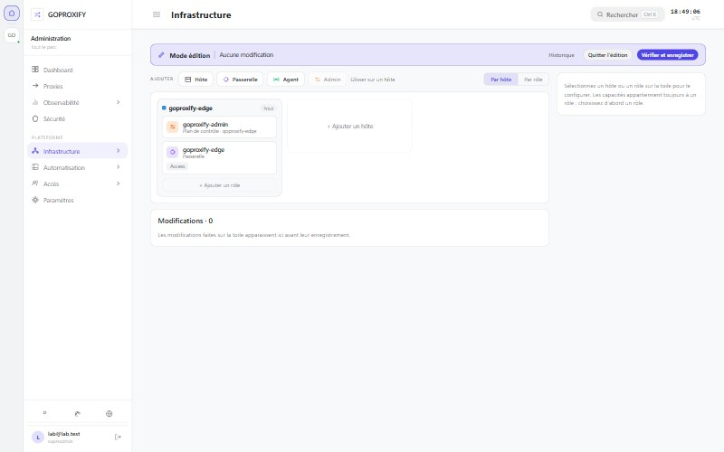
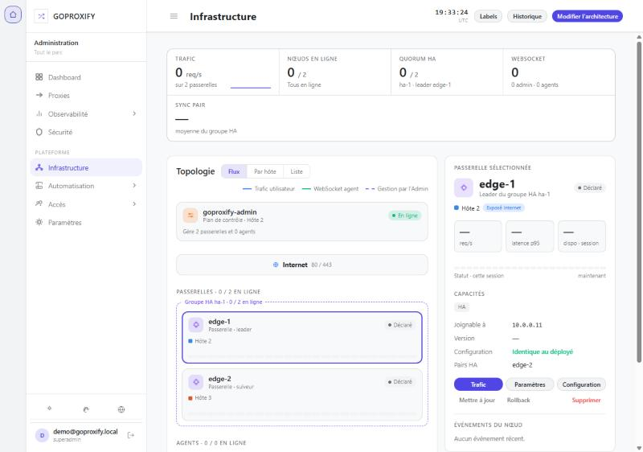
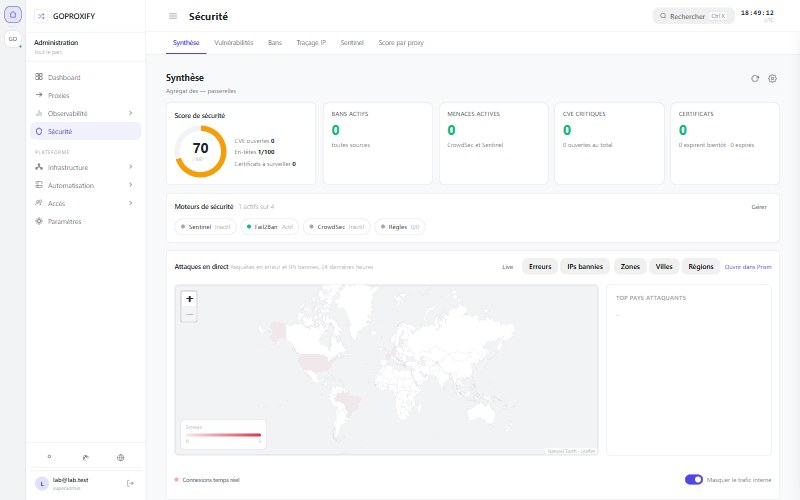
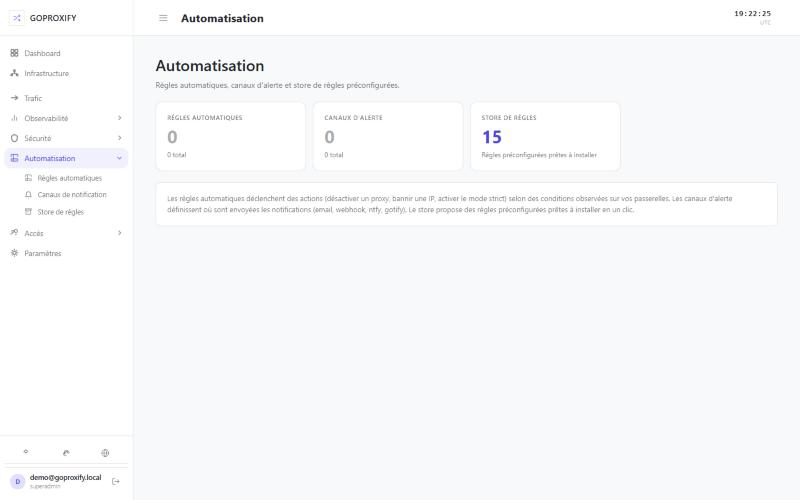
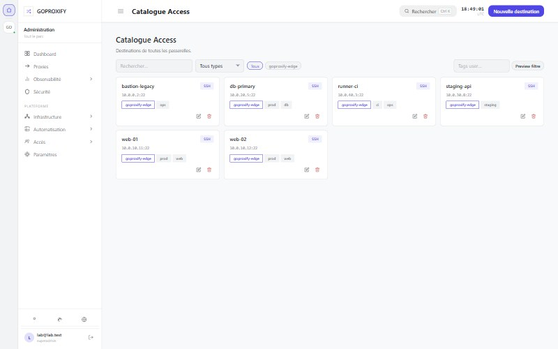
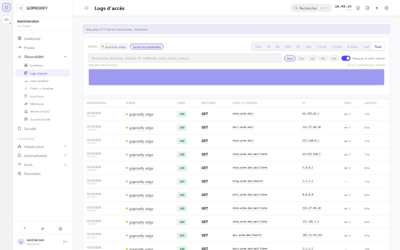

The reverse proxy that guides every visitor to the right app.
Publish your services. GoProxify makes them reachable, protected, and easy to manage — without the jargon.
A reverse proxy lets you publish several websites on the internet — each with its own address (https://blog…, https://shop…, https://app…) — while the applications themselves stay behind, out of direct reach.
You run multiple apps or containers. Visitors open a normal web address for each site. They never talk to the containers directly.
GoProxify receives every visit and opens the right door: blog traffic goes to the blog, shop traffic to the shop — according to the rules you set.
From one place you decide which sites are public, which need a login, and how to keep them available if a machine fails.
From the control panel to the architecture assistant — here is what each piece does for you day to day.
A clear web interface to run the whole setup: publish sites, attach domain names, invite teammates, schedule backups, and follow alerts — in your language (EN, FR, ES, DE).
Inside the Admin, place your machines on a canvas and drop what each one needs — control panel, gateways, Agent, Portainer. GoProxify turns that picture into ready-to-run install steps, and lets you reconfigure an existing deployment without editing compose files yourself.
Gateways are the public front door. They welcome visitors on your https://… addresses and send each one to the right site in your fleet — quietly, and at scale.
The Agent watches your containers (via Portainer or Docker) and tells the gateways what is running. When you start, stop or move an app, public routes stay in sync.
Your sites should not go dark because one machine hiccups. Gateways remember their settings, a spare gateway can take over, and unhealthy apps are skipped.
Putting sites on the internet invites bots and abuse. GoProxify includes a WAF, the Sentinel behavioural engine, CrowdSec integration, GeoIP filtering, and SSO — all configured from the Admin.
Know who visits which site, spot errors quickly, and get notified where your team already works — without digging through server files.
When an operator needs a shell on a VM or container, they open a secure terminal in the browser. You invite people, set limits, and avoid sharing passwords in chat.
Visitor IP addresses are personal data. Decide how they are kept and for how long, who may see them, and handle erasure requests — from the Admin, the CLI or the API.
Many layouts are possible — here are two examples. A home lab needs one Admin, one Edge and one Agent. For production, add a second gateway and an Agent on every host. Read the diagram top to bottom: Internet, gateways, then your apps and hosts.
You can build a layout like this in the Admin with the architecture assistant: place hosts on a board, then get install steps and a QR code per machine.
A few screens from a running instance — dashboard, topology editor, security and live logs.

Fleet health, request rate and recent activity at a glance.

Every HTTP proxy and L4 stream in one view — status, backends, load balancing and live throughput.

Traffic analysis across gateways and proxies: requests, error rate, countries, anomalies and top clients.

Place hosts on a board and let GoProxify turn it into a working setup.

Infrastructure view of an HA group — two gateways, one leader, quorum and sync tracked in real time.

Fail2Ban, CrowdSec and WAF status, bans and posture score per gateway.

Rules, alert channels and a store of ready-to-install presets.

Access catalog of SSH and Docker destinations, reachable from a web terminal or a standard ssh client.

Every request across every proxy, filterable in real time.
A ready-to-run Admin + Edge + Agent stack. Pick your method.
Generates hex-32 secrets, writes .env (chmod 600), checks Docker / ports, then starts Admin + Edge + Agent.
Admin UI → http://localhost:9443. Variants (run alone, never paste with the block above): bash quickstart.sh --print-secrets · bash quickstart.sh --env-only
Official GHCR images with floating :preview tag (0.x). Optional SemVer pin via versions.json.
# Click the key icon to generate secrets in your browser GPX_JWT_SECRET= GPX_PAIRING_SECRET= GPX_FIRST_ADMIN_EMAIL=admin@example.com GPX_FIRST_ADMIN_PASSWORD= # Optional — defaults work out of the box; configure further in the Admin # ADMIN_PORT=9443 # TZ=Europe/Paris # GOPROXIFY_ADMIN_TAG=preview # GOPROXIFY_EDGE_TAG=preview # GOPROXIFY_AGENT_TAG=preview
Paste the compose, then load stack.env (Advanced → Load variables from .env file) or set the same keys in Environment variables.
# Portainer — model A: secrets via stack.env
networks:
goproxify_net:
name: goproxify_net
volumes:
goproxify_admin_data:
goproxify_edge_data:
goproxify_agent_data:
services:
goproxify-admin:
image: ghcr.io/vincamok/goproxify/admin:preview
container_name: goproxify-admin
restart: unless-stopped
command: ["admin"]
environment:
- TZ=${TZ:-Europe/Paris}
- GPX_SECURITY_JWT_SECRET=${GPX_JWT_SECRET}
- GPX_PAIRING_SECRET=${GPX_PAIRING_SECRET}
- GPX_FIRST_ADMIN_EMAIL=${GPX_FIRST_ADMIN_EMAIL}
- GPX_FIRST_ADMIN_PASSWORD=${GPX_FIRST_ADMIN_PASSWORD}
- GPX_IDENTITY_EDGE_NODE_NAME=${EDGE_NODE_NAME:-goproxify-edge}
- GPX_SERVER_API_PORT=9443
ports:
- "${ADMIN_PORT:-9443}:9443"
volumes:
- goproxify_admin_data:/etc/goproxify
networks: [goproxify_net]
goproxify-edge:
image: ghcr.io/vincamok/goproxify/edge:preview
container_name: goproxify-edge
restart: unless-stopped
command: ["edge"]
environment:
- TZ=${TZ:-Europe/Paris}
- GPX_PAIRING_SECRET=${GPX_PAIRING_SECRET}
- GPX_IDENTITY_EDGE_NODE_NAME=${EDGE_NODE_NAME:-goproxify-edge}
ports:
- "${EDGE_HTTP_PORT:-80}:80"
- "${EDGE_HTTPS_PORT:-443}:443"
- "${EDGE_HTTPS_PORT:-443}:443/udp"
volumes:
- goproxify_edge_data:/etc/goproxify
networks: [goproxify_net]
depends_on: [goproxify-admin]
goproxify-agent:
image: ghcr.io/vincamok/goproxify/agent:preview
container_name: goproxify-agent
restart: unless-stopped
command: ["agent"]
environment:
- TZ=${TZ:-Europe/Paris}
- GPX_PAIRING_SECRET=${GPX_PAIRING_SECRET}
- GPX_CONTROL_PLANE_EDGE_ENDPOINT=http://goproxify-edge:8000
- GPX_CONTROL_PLANE_ADMIN_ENDPOINT=http://goproxify-admin:9443
- GPX_IDENTITY_AGENT_NODE_NAME=${AGENT_NODE_NAME:-goproxify-agent}
volumes:
- /var/run/docker.sock:/var/run/docker.sock:ro
- goproxify_agent_data:/etc/goproxify
networks: [goproxify_net]
depends_on: [goproxify-edge]
# Click the key icon to generate secrets in your browser GPX_JWT_SECRET= GPX_PAIRING_SECRET= GPX_FIRST_ADMIN_EMAIL=admin@example.com GPX_FIRST_ADMIN_PASSWORD= # Optional — defaults work out of the box; configure further in the Admin # ADMIN_PORT=9443 # TZ=Europe/Paris # EDGE_NODE_NAME=goproxify-edge # AGENT_NODE_NAME=goproxify-agent
Single paste: replace CHANGE_ME_* before Deploy. No stack.env / env file needed.
# Portainer — model B: inline secrets (no stack.env) # Click the key icon to fill CHANGE_ME_* in your browser networks: goproxify_net: name: goproxify_net volumes: goproxify_admin_data: goproxify_edge_data: goproxify_agent_data: services: goproxify-admin: image: ghcr.io/vincamok/goproxify/admin:preview container_name: goproxify-admin restart: unless-stopped command: ["admin"] environment: - TZ=Europe/Paris - GPX_SECURITY_JWT_SECRET=CHANGE_ME_JWT_HEX32 - GPX_PAIRING_SECRET=CHANGE_ME_PAIRING_HEX32 - GPX_FIRST_ADMIN_EMAIL=admin@example.com - GPX_FIRST_ADMIN_PASSWORD=CHANGE_ME_PASSWORD_MIN12 - GPX_IDENTITY_EDGE_NODE_NAME=goproxify-edge - GPX_SERVER_API_PORT=9443 ports: - "9443:9443" volumes: - goproxify_admin_data:/etc/goproxify networks: [goproxify_net] goproxify-edge: image: ghcr.io/vincamok/goproxify/edge:preview container_name: goproxify-edge restart: unless-stopped command: ["edge"] environment: - TZ=Europe/Paris - GPX_PAIRING_SECRET=CHANGE_ME_PAIRING_HEX32 - GPX_IDENTITY_EDGE_NODE_NAME=goproxify-edge ports: - "80:80" - "443:443" - "443:443/udp" volumes: - goproxify_edge_data:/etc/goproxify networks: [goproxify_net] depends_on: [goproxify-admin] goproxify-agent: image: ghcr.io/vincamok/goproxify/agent:preview container_name: goproxify-agent restart: unless-stopped command: ["agent"] environment: - TZ=Europe/Paris - GPX_PAIRING_SECRET=CHANGE_ME_PAIRING_HEX32 - GPX_CONTROL_PLANE_EDGE_ENDPOINT=http://goproxify-edge:8000 - GPX_CONTROL_PLANE_ADMIN_ENDPOINT=http://goproxify-admin:9443 - GPX_IDENTITY_AGENT_NODE_NAME=goproxify-agent volumes: - /var/run/docker.sock:/var/run/docker.sock:ro - goproxify_agent_data:/etc/goproxify networks: [goproxify_net] depends_on: [goproxify-edge]
Chart in the repo (helm/goproxify). Requires global.authToken. Generate secrets in your browser, then helm install.
# Click the key icon — secrets stay in your browser fullnameOverride: goproxify global: authToken: "" timezone: Europe/Paris admin: image: tag: "preview" config: jwtSecret: "" ingress: enabled: true host: admin.example.com edge: image: tag: "preview" agent: image: tag: "preview"
One role per machine, same images. Use the same GPX_PAIRING_SECRET everywhere and open port 8000 between machines (firewall: only from your own hosts).
On the first machine, follow the Home lab method (Script or Docker Compose): it starts the Admin and the first Edge.
On a second machine, run an Edge with its own node name, then register it in the Admin (Infrastructure → Edit architecture): it goes from declared to online.
services:
goproxify-edge:
image: ghcr.io/vincamok/goproxify/edge:preview
container_name: goproxify-edge
restart: unless-stopped
command: ["edge"]
environment:
- GPX_PAIRING_SECRET=<same as the Admin>
- GPX_IDENTITY_EDGE_NODE_NAME=edge-2
ports:
- "80:80"
- "443:443"
- "443:443/udp"
- "8000:8000"
volumes:
- edge2_data:/etc/goproxify
volumes:
edge2_data:
On each internal host, run an Agent that points to an Edge. Give every Agent a unique node name, then approve it in the Admin (Agents menu).
services:
goproxify-agent:
image: ghcr.io/vincamok/goproxify/agent:preview
container_name: goproxify-agent
restart: unless-stopped
command: ["agent"]
environment:
- GPX_PAIRING_SECRET=<same as the Admin>
- GPX_CONTROL_PLANE_EDGE_ENDPOINT=http://<edge-ip>:8000
- GPX_CONTROL_PLANE_ADMIN_ENDPOINT=http://<admin-ip>:9443
- GPX_IDENTITY_AGENT_NODE_NAME=agent-host-1
volumes:
- /var/run/docker.sock:/var/run/docker.sock:ro
- agent_data:/etc/goproxify
volumes:
agent_data:
Tip: the architecture assistant in the Admin generates these steps, with a QR code, for each machine.
Each alert rule can notify multiple teams on multiple channels at once. Alertmanager-inspired model.
SMTP configurable
Slack, Discord, Teams…
Push mobile, self-hosted
Push mobile, self-hosted
Automatic issue creation
Modern issue tracking
Automatic issue opening
Automatic issue opening
Open-source ticketing
ITSM via REST API
Deliberate choices. No heavy framework, no hidden runtime — just Go and proven libraries.
| Component | Role | Used in |
|---|---|---|
|
Go 1.25
|
Single static binary, zero runtime to install, native cross-compilation | Admin · Edge · Agent |
|
HTTP/3 QUIC
|
UDP transport via quic-go. Automatic Alt-Svc, 0-RTT, lower latency on degraded networks |
Edge |
|
SQLite (CGO-free)
|
Persistance without C deps. Cross-platform binary. Optional Raft cluster (3 nodes) for Admin HA | Admin |
|
WebSocket control plane
|
Persistent Admin↔Edge and Agent↔Edge tunnels. full_sync, live metrics for adaptive LB, inter-Edge gateway |
Admin · Edge · Agent |
|
mTLS L4 tunnel
|
Edge↔Edge encrypted L4 channel — pool of peers, automatic failover, CONNECT-like protocol over TLS 1.3 | Edge |
|
Cache AES-256-GCM
|
Encrypted routes & certs on disk. Edge starts autonomously even if Admin is unreachable | Edge |
|
Prometheus
|
/metrics endpoint on every component — drop-in Grafana integration |
Admin · Edge · Agent |
|
OpenTelemetry
|
Distributed request tracing. Configurable OTLP exporters (Jaeger, Tempo…) | Edge · Admin |
|
Docker Engine API
|
Read-only via docker.sock. Real-time container events (start/stop/update) |
Agent |
|
JWT + PAT
|
UI session (JWT). User API tokens gpx_pat_* with scopes for REST & MCP. Separate Edge/Agent pairing tokens |
Admin |
|
MCP
|
Model Context Protocol (JSON-RPC + SSE). 30+ tools: proxies, certs, domains, snippets, alerts, auth providers, logs, audit… PAT required — Claude Desktop / Cursor ready | Admin |
|
ACME DNS-01
|
Automatic wildcard certs via OVH, Cloudflare, Gandi, Route53, Hetzner | Admin → Edge |
|
Certificate Hub
|
ACME monitor (expiry dashboard + alerts), external cert import (PEM), deploy targets (webhook HMAC / ssh_exec), pull tokens in 7 formats (PEM / DER / PKCS#12 / JSON) | Admin |
|
Internal CA
|
Self-signed internal root CA (ECDSA P-256), server/client certificate issuance for internal services — outside ACME | Admin |
Guides, API contract, MCP server and version tracking — all in the repo.
Guides
Endpoints, JWT / PAT auth, pairing tokens.
Claude Desktop, Cursor — plug in a gpx_pat_*.
Admin ↔ Edge ↔ Agent flows, WS control plane, adaptive LB & gateway.
Passthrough vs Terminate between entry Edge and target Edge.
Full inventory of Edge, Admin and Agent capabilities.
First start, password reset, Docker labels, delegation edge cases.
WAF (13 CRS-4 rule sets, response inspection), Sentinel, bans, GeoIP, timeouts and CVE scanner.
Data collected and retention, IP anonymisation and pseudonymisation, erasure, delegating IP reveal, operator checklist.
Reference
All commands: proxy, cert, domain, alert, security, access, tokens, backup…
Complete goproxify.* label reference — routing, WAF, Sentinel, canary, shadow.
JSON Schema for proxy YAML files — for editor autocomplete and validation.
All gpx_* metrics: labels, buckets, PromQL examples and recommended alerts.
All notable changes by version — new features, improvements, fixes.
Upcoming milestones and planned features.
PR workflow, tests, DCO sign-off, coding conventions.
What each volume persists: Admin database, Edge proxy configs, Agent tokens, GeoIP database.